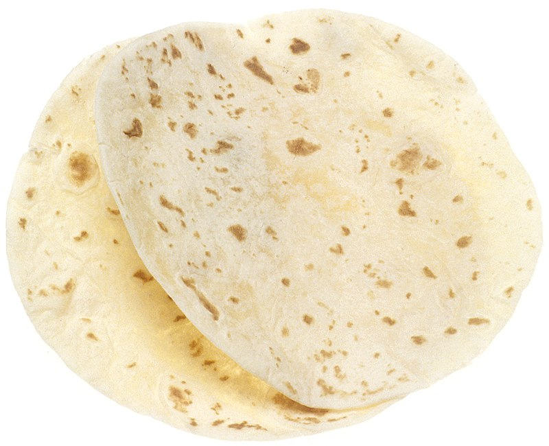

Thortillas!

Shockingly delicious thortillas.
Ingredients:
2 cups of all purpose flour
3 tablespoons of olive oil
Steps
- In a large bowl, combine flour and salt. Stir in water and oil. Turn onto a floured surface; knead 10-12 times, adding a little flour or water if needed to achieve a smooth dough. Let rest for 10 minutes.
- Divide dough into 8 portions. On a lightly floured surface, roll each portion into a 7-in. circle.
- In a greased cast-iron or other heavy skillet, cook tortillas over medium heat until lightly browned, about 1 minute on each side. Serve warm.